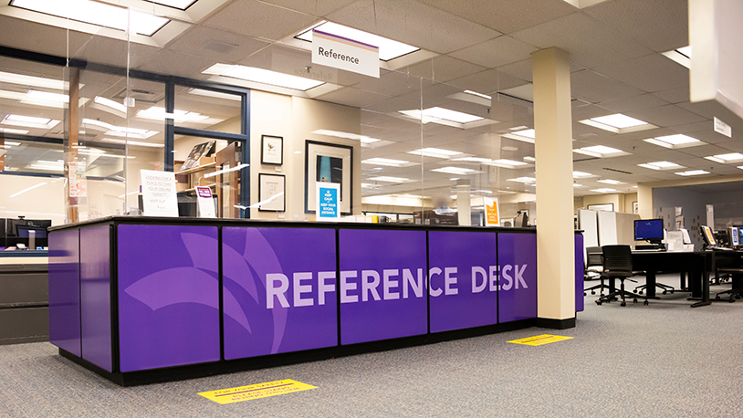

Work Experience

My role directly assists the end-users of the college with any technology problems that arise. I am a versatile computer specialist that works with all kinds of software and people, both students and faculty of all ages and professions. I strive to provide customer service that efficiently fixes their problems as well as soothing the anxiety people have with their technology. I work both over the phone and in person, utilizing KACE ticketing software to document my work and escalate tickets to the different departments.
I managed appointments for multiple attorneys through calendaring, drafting legal documents relating to Family Law and Estate & Probate Law. I also worked with Clio to keep legal billing up to date and kept the filing cabinets of multiple attorneys organized and up to date for each of our hundreds of clients. I assisted to manage and track large projects such as the sudden transfer of an entire attorney’s client base from a retiring partner to a new one.